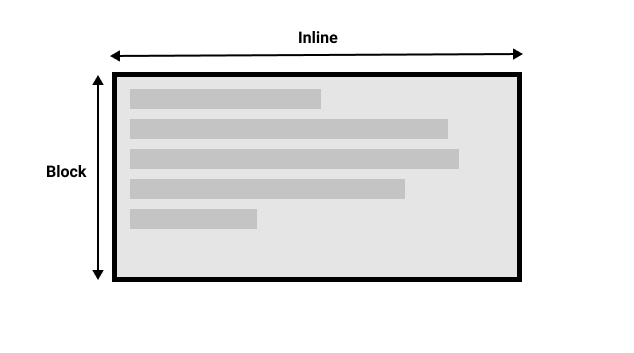
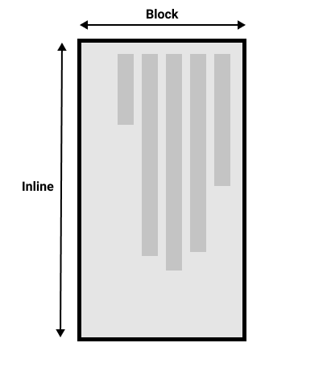

Изменение направления текста
Многие свойства и значения, с которыми мы столкнулись до сих пор при изучении CSS, были привязаны к физическим размерам нашего экрана. Мы создаём границы, например, сверху, справа, снизу и слева от коробки.Эти физические размеры очень точно соответствуют контенту, который просматривается по горизонтали, и по умолчанию Интернет имеет тенденцию поддерживать языки с письмом слева направо (например, английский или французский) лучше, чем языки с письмом справа налево (например, арабский).
Однако в последние годы CSS развивался чтобы лучше поддерживать разную направленность контента, включая контент с направлением справа налево, а также контент сверху вниз (например, в японском языке) - эти разные направления называются режимами письма. По мере того, как вы продвигаетесь в обучении и начинаете работать с макетом, понимание режимов письма будет вам очень полезно, поэтому мы сейчас и познакомимся с ними.
Какие бывают режимы письма?
Режим письма в CSS определяет, идёт ли текст по горизонтали или по вертикали. Свойство
writing-mode позволяет нам переключаться из одного режима письма в другой. Для этого вам не
обязательно работать на языке, который использует режим вертикального письма - вы также можете изменить
режим письма частей вашего макета для творческих целей.
В приведённом ниже примере заголовок отображается с использованием
writing-mode: vertical-rl. Теперь текст идёт вертикально. Вертикальный текст часто
используется в графическом дизайне и может быть способом добавить более интересный вид вашему веб-дизайну.
Три возможных значения свойства writing-mode:
horizontal-tb: Направление потока блока сверху вниз. Предложения идут горизонтально.vertical-rl: Направление потока блоков справа налево. Предложения идут вертикально.vertical-lr: Направление потока блока слева направо. Предложения идут вертикально.
Таким образом, свойство writing-mode на самом деле устанавливает направление, в котором
элементы уровня блока отображаются на странице - сверху вниз, справа налево или слева направо. Это затем
определяет направление движения текста в предложениях.
Writing modes and block and inline layout
We have already discussed block and inline layout, and the fact that some things display as block elements and others as inline elements. As we have seen described above, block and inline is tied to the writing mode of the document, and not the physical screen. Blocks are only displayed from the top to the bottom of the page if you are using a writing mode that displays text horizontally, such as English.
If we look at an example this will become clearer. In this next example I have two boxes that contain a
heading and a paragraph. The first uses writing-mode: horizontal-tb, a writing mode that is
written horizontally and from the top of the page to the bottom. The second uses
writing-mode: vertical-rl; this is a writing mode that is written vertically and from right
to left.
When we switch the writing mode, we are changing which direction is block and which is inline. In a
horizontal-tb writing mode the block direction runs from top to bottom; in a
vertical-rl writing mode the block direction runs right-to-left horizontally. So the
block dimension is always the direction blocks are displayed on the page in the writing
mode in use. The inline dimension is always the direction a sentence flows.
This figure shows the two dimensions when in a horizontal writing mode.
This figure shows the two dimensions in a vertical writing mode.
Once you start to look at CSS layout, and in particular the newer layout methods, this idea of block and inline becomes very important. We will revisit it later on.
Direction
In addition to writing mode we also have text direction. As mentioned above, some languages such as Arabic are written horizontally, but right-to-left. This is not something you are likely to use in a creative sense — if you simply want to line something up on the right there are other ways to do so — however it is important to understand this as part of the nature of CSS. The web is not just for languages that are displayed left-to-right!
Due to the fact that writing mode and direction of text can change, newer CSS layout methods do not refer to left and right, and top and bottom. Instead they will talk about start and end along with this idea of inline and block. Don't worry too much about that right now, but keep these ideas in mind as you start to look at layout; you will find it really helpful in your understanding of CSS.
Logical properties and values
The reason to talk about writing modes and direction at this point in your learning however, is because of the fact we have already looked at a lot of properties which are tied to the physical dimensions of the screen, and make most sense when in a horizontal writing mode.
Let's take a look at our two boxes again — one with a horizontal-tb writing mode and one
with vertical-rl. I have given both of these boxes a width. You can see that
when the box is in the vertical writing mode, it still has a width, and this is causing the text to
overflow.
What we really want in this scenario, is to essentially swap height and width along with the writing mode. When we're in a vertical writing mode we want the box to expand in the block dimension just like it does in the horizontal mode.
To make this easier, CSS has recently developed a set of mapped properties. These essentially replace
physical properties — things like width and height — with
logical, or flow relative versions.
The property mapped to width when in a horizontal writing mode is called
inline-size — it refers to the size in the inline dimension. The property for
height is named block-size and is the size in the block dimension. You can see
how this works in the example below where we have replaced width with
inline-size.
Logical margin, border, and padding properties
In the last two lessons we have learned about the CSS box model, and CSS borders. In the margin, border,
and padding properties you will find many instances of physical properties, for example
margin-top, padding-left, and border-bottom. In the same way that
we have mappings for width and height there are mappings for these properties.
The margin-top property is mapped to margin-block-start — this will always
refer to the margin at the start of the block dimension.
The padding-left property maps to padding-inline-start, the padding that is
applied to the start of the inline direction. This will be where sentences start in that writing mode. The
border-bottom property maps to border-block-end, which is the border at the end
of the block dimension.
You can see a comparison between physical and logical properties below.
If you change the writing mode of the boxes by switching the writing-mode property
on .box to vertical-rl, you will see how the physical properties stay tied to
their physical direction, whereas the logical properties switch with the writing mode.
You can also see that the <h2> has a black border-bottom. Can you
work out how to make that bottom border always go below the text in both writing modes?
There are a huge number of properties when you consider all of the individual border longhands, and you can see all of the mapped properties on the MDN page for Logical Properties and Values.
Logical values
We have so far looked at logical property names. There are also some properties that take physical values
of top, right, bottom, and left. These values also
have mappings, to logical values — block-start, inline-end,
block-end, and inline-start.
For example, you can float an image left to cause text to wrap round the image. You could replace
left with inline-start as shown in the example below.
Change the writing mode on this example to vertical-rl to see what happens to the
image. Change inline-start to inline-end to change the float.
Here we are also using logical margin values to ensure the margin is in the correct place no matter what the writing mode is.
Should you use physical or logical properties?
The logical properties and values are newer than their physical equivalents, and therefore have only recently been implemented in browsers. You can check any property page on MDN to see how far back the browser support goes. If you are not using multiple writing modes then for now you might prefer to use the physical versions. However, ultimately we expect that people will transition to the logical versions for most things, as they make a lot of sense once you start also dealing with layout methods such as flexbox and grid.
Summary
The concepts explained in this lesson are becoming increasingly important in CSS. An understanding of the block and inline direction — and how text flow changes with a change in writing mode — will be very useful going forward. It will help you in understanding CSS even if you never use a writing mode other than a horizontal one.
In the next module we will take a good look at overflow in CSS.